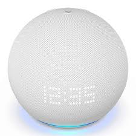
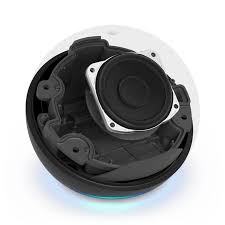
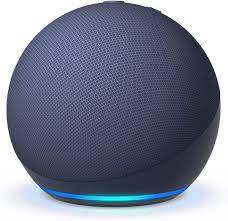

¿Qué es el Echo Dot?
El Echo Dot es un altavoz inteligente controlado por la voz ya que se puede conectar con Alexa, un asistente virtual creado por Amazon.
Para activarlo debes decir su nombre “Alexa” y desde ese instante empezará a escucharte. En ese momento podrás preguntarle lo que desees y te responderá ya que está conectado a internet y buscará la respuesta en la red.
Además de hacerle preguntas y el altavoz responderte, tiene otras muchas funciones: puedes conectarlo a otros dispositivos electrodomésticos inteligentes para que realicen funciones como encender luces, activar o desactivar los termostátos, cortar la corriente de enchufes de dispositivos que deseamos desconectar. Además, es capaz de activar las cámaras de seguridad o el robot aspiradora inteligente.
¿Qué beneificios aporta?
Los beneficios que aporta son:
- Podemos interactuar con el dispositivo a través de la voz. El altavoz es el intermediario entre la voz de la persona y el dispositivo sobre el que va a ejercer una función o en el que se va a buscar la información.
- Para personas con discapacidades es una gran ventaja ya que no tendrán la necesidad de acercarse al altavoz ni interactuar fisicamente con él.
- Cuando se está haciendo alguna actividad en la que no se pueden utilizar las manos, solamente con la voz podrás dar órdenes y recibir respuestas
- Puedes realizar llamadas solo con la voz, sin necesidad de teclear ningún número.
- Puedes personalizarlo, puedes poner el idioma que desees, el volumen, la privacidad y las preferencias de la música que deseas escuchar.
Privacidad y seguridad
¿Qué se hace con toda la información que le proporcionamos al Echo Dot y a su vez a la IA Alexa? Aunque esta la opción de eliminar las grabaciones de todo lo que le decimos, siempre queda gran parte de la información registrada. Aunque Amazon no trata de vender tu información personal, puede venderles a otros ese acceso para dirigirte anuncios enfocados en tus búsquedas con el fin de venderte cosas. Quedan registradas tus búsquedas, los programas de televisión que ves (si tienes el altavoz conectado a ella), el horario de las luces, las compras que realizas por internet. Con toda esta información recopilada, te dirigirá publicidad dirigida a tus búsquedas, gustos y preferencias.
¿Por qué Echo Dot 5 y no otro?
- Mejora de altavoces integrados, este tiene un transductor ligeramente más grande, lo que ofrece mejor sonido.
- Mejora en la estética, al igual que el de 4ª generación tiene forma de esfera, al contrario de los anteriores, que eran.
- Mayor rendimiento, más rapidez en las respuestas y mayor capacidad de procesamiento.
- Capta las voces individuales.
- Al ser una nueva versión, dispone de una mayor compatibilidad con diferentes dispositivos y electrodomésticos inteligentes.
- Tiene cancelación de ruido para captar mejor la voz en ambientes ruidosos.
- Te mostrará el nombre de la canción que esta reproduciendo en la pantalla
Fotos
  Más información
En los siguientes enlaces podrás encontrar más información sobre este altavoz: